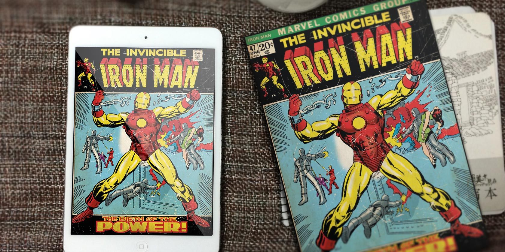
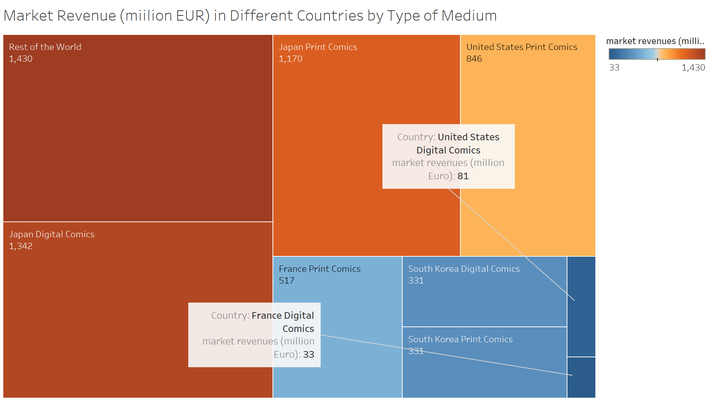
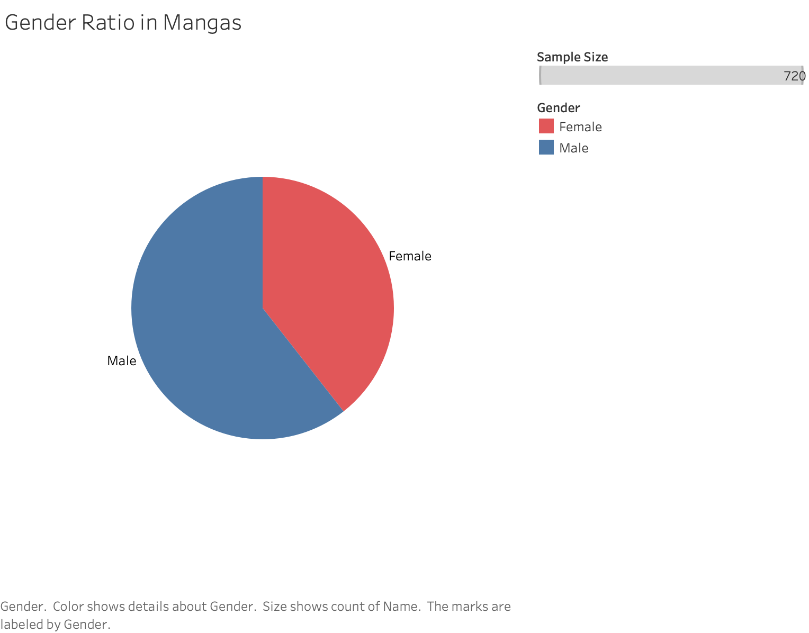
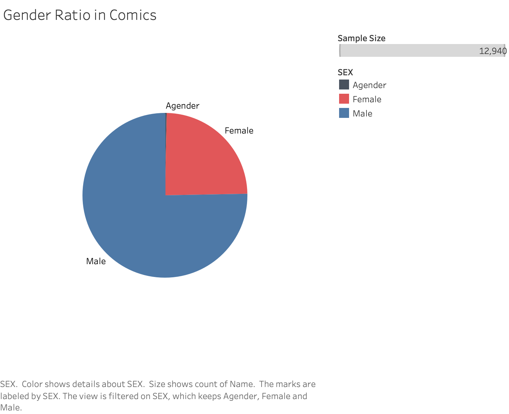

General Idea: how comics reveal our society.
Technology advancements are changing the comics industry dramatically. In particularly, the potential of digital comics should not to be underestimated. In this section, we are going to look Digital Comics vs Print Comics in different country and how people’s preference reveal our society.
First, let’s take a look at the global comics market.
WOW! What a difference. It seems like digital comics is much more popular in Asian countries than in the Western country. To find out why, let’s take a closer look into the U.S and Japan.
TemplateBoth U.S and Japan has a long comics/manga history, and comics industry are thriving in these two countries. Looking into data from these two countries could give us some insights.
Look at the data........let’s anaylse in the next sub section.
Let’s look at the publisher shares first
In japan, the......only......, while in the U.S Marvel and DC has controlled.....
What about the general book market?
Clearly, digital books more popular in ........
Data from Google Trends 2004-Today
Comics - blue, Manga - pink
Data from Google Trends
Values measure std. from 50/50 split between Comics/Manga
(Location of this section subject to change) First, here’s a chart comparing the gender ratio among manga and comics:
To Be Continued
This template was adapted from the initial Scrollytelling template for Idyll. The code and visualization examples were adapted from the final project template created for a previous offering of CSE 412.